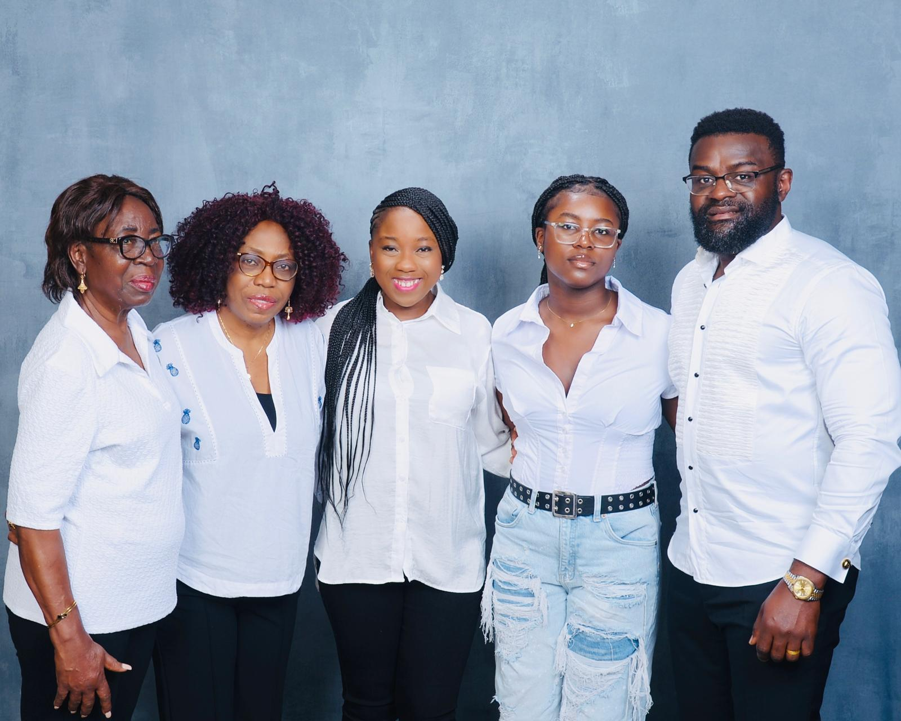
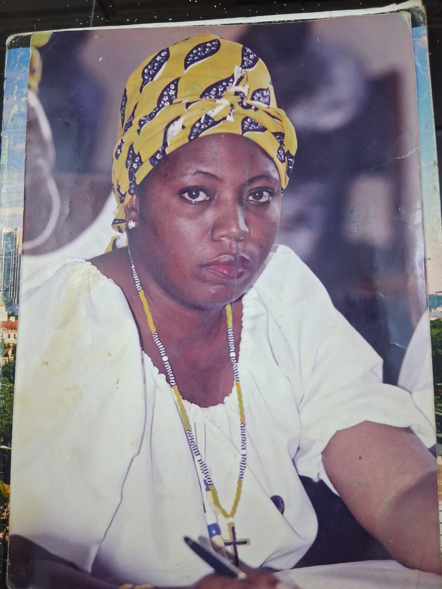
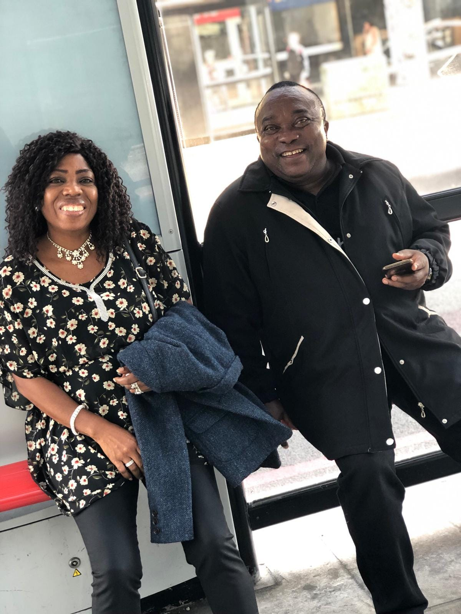

Life Story
A Remarkable Life of Faith, Love, Compassion, and Service
🌸
Early Life
Mrs. Nzume, née Carolyne Bessem Lobe, was a beacon of peace, love, kindness, gentleness and compassion. She was born on 12 April 1961 in Kembong, Manyu Division, to Pa Netongo Lobe (of blessed memory) and Ma Esther Lobe, née Ashu Mbu.
Carolyne was the second of seven children and leaves behind five siblings. She often spoke fondly of the strict but loving Christian upbringing she received, which played a significant role in shaping the remarkable woman she became.
She attended several Presbyterian, Catholic and Government primary and secondary schools across Kumba, Mamfe, Besongabang, and proceeded to CCAST Bambili where she obtained her GCE Advanced Level.
She subsequently attended the University of Yaoundé for two years before gaining admission to the École Nationale d'Administration et de Magistrature (ENAM) — National School of Administration and Magistracy, where she trained as a Labour Controller.
This marked the beginning of a long and distinguished career in the civil service, through which she served her country with honour, integrity, dedication and honesty.

.jpeg)
Family Life
On 26 August 1986, Carolyne married her soulmate and devoted husband, Colonel Kenneth Akwe Nzume. Together, they were blessed with biological and adopted children and grandchildren.
Mr. and Mrs. Nzume also opened their hearts and home by adopting several children, many of whom have gone on to become successful individuals around the world. Their lives were positively shaped by the sacrifices, love, prayers, provision and parental guidance they received.
Carolyne was a loving and devoted wife, mother, grandmother, daughter, sister, aunt and friend. Her warmth, patience, gentle spirit and generosity touched and transformed the lives of everyone who crossed her path.
Her kindness knew no bounds. She treated everyone with equal dignity and respect, irrespective of their class, gender, status or position. She had a remarkable ability to see the good in people and played an active role in helping many become better versions of themselves.
Her gentle and mild-mannered nature meant that her children could always confide in her and turn to her for support, advice and encouragement. She was their trusted confidante, prayer warrior and intercessor — a safe place for them in times of both joy and difficulty.


Faith & Church Life
Beyond her family, Carolyne was, above all, a God-fearing woman. Her faith was central to her life and shaped the way she lived, loved and treated others. Through her words and actions, she sought to demonstrate the love of God to everyone around her.
She was a fervent and committed Presbyterian, a devoted member of the Christian Women Fellowship (CWF) and a chorister. Her beautiful harmonies were always a joy to hear.
For 32 years, she worshipped at P.C. Garoua, where she served faithfully as an Elder, Chorister in the English Choir and CWF President. She also worshipped at P.C. Great Soppo, Buea, and P.C. Bonadikombo.
Even during periods of ill health, Carolyne remained committed to serving God whenever her strength allowed. She continued to participate in church activities and remained deeply connected to her faith and church family.
Her passing leaves the church community without a beloved sister, friend and committed servant of God whose passion was to live out the Gospel and share God's love with those around her.

Professional Life
Carolyne enjoyed a long and distinguished career with the Ministry of Labour and Social Security, serving in various capacities and regions in Cameroon.
Her dedication and professionalism saw her appointed Service Head of the Regional Delegations in both the North Region (Garoua) and the South West Region (Buea). She performed these responsibilities diligently and with distinction for many years.
She also served as the Divisional Delegate for Fako for several years before returning to Garoua, where she retired in 2016 as a Labour Administrator.
Throughout her illustrious career, Carolyne formed lasting friendships with colleagues and professional associates. Those who worked with her consistently remembered her for her integrity, professionalism, kindness, humility and dedication to service.

.jpeg)
Travels, Passions & Joys
Carolyne loved spending time with family and friends and cherished every opportunity to celebrate and fellowship with those she loved. Whether she could be physically present or not, her prayers, love and support were never far away.
She loved to laugh and found great joy in the simple pleasures of life — fellowship, good food, family gatherings, laughter, jokes, reminiscing and, above all, giving thanks to God for His mercies upon her life and the lives of her family, extended family and friends.
Carolyne was also a wonderful cook. She was independent by nature and always preferred to keep busy, finding fulfilment in doing things for herself and, even more so, in doing things for others.
She loved long walks and enjoyed being surrounded by nature and flowers. Red roses were her particular favourite, earning her the affectionate family nickname "Madame Flower."
She found beauty in the simplest things and never wanted to be a burden to anyone. Instead, she took great joy in easing the burdens and pain of others, often doing so with a smile, a kind word and a loving heart.
Everywhere she went, she was loved. She formed friendships across the world and had a remarkable ability to make new friends wherever life took her.
Carolyne also loved to travel and visited several countries, including China, the United States, France, England, Israel and Dubai, among others. She enjoyed experiencing different cultures, tasting new cuisines and learning about different peoples and ways of life.
She had a deep appreciation for the beauty and diversity of God's creation. During her travels, she would often marvel at the different landscapes, flowers and wonders of nature she encountered.
She encouraged those around her to embrace life and make the most of every opportunity, often reminding them:
"LES BEAUX JOURS SONT RARES"
"The beautiful days are rare."
"ONE LIFE TO LIVE"
Carolyne's encouragement to seize every moment


"Love is patient, love is kind. It does not envy, it does not boast, it is not proud. It does not dishonour others, it is not self-seeking, it is not easily angered, it keeps no record of wrongs. Love does not delight in evil but rejoices with the truth. It always protects, always trusts, always hopes, always perseveres."
Final Days
Carolyne began experiencing health challenges approximately eight years ago. Yet, throughout these difficult years, her strong faith in God, hope and positive outlook on life remained unwavering.
She repeatedly confessed her faith with the words:
Even during her darkest and most difficult moments, her faith and strength became a source of encouragement not only to herself but also to her family. She continued to remind those around her to hold even more tightly to Jesus, to love Him and to appreciate His faithfulness.
On 5 July 2026, Carolyne was hospitalised for approximately a week. She was later discharged and returned home to her family.
At a time when the family believed she was regaining her strength, Carolyne quietly and peacefully passed away at home on 18 July 2026, with her loving and devoted husband by her side.
Legacy
Carolyne leaves behind her beloved husband, children, grandchildren, mother, siblings, in-laws, cousins, nieces, nephews and extended family, as well as neighbours, friends and countless others whose lives she touched.
Her legacy extends far beyond those who knew her personally. She will be remembered around the world for her unwavering faith, radiant smile, gentle spirit, patience, kindness, generosity and beauty.
She leaves behind a life that was lived in service to God, family, country and loved ones.
Though her physical presence is no longer with us, the love she gave, the lives she touched, the prayers she prayed and the memories she created will remain forever in the hearts of all who knew and loved her.

Rest peacefully, Carolyne.
Your love remains.
Your faith inspires.
Your memory lives on.
Her Journey
Milestones of a life well lived
Born in Kembong
Born on 12th April in Kembong, Manyu Division to Pa Netongo Lobe and Ma Esther Lobe.
GCE A' Levels
Obtained her GCE A' levels at CCAST Bambili, marking the start of her academic excellence.
University of Yaounde
Attended the University of Yaounde for two years, pursuing higher education.
Married Her Soul Mate
Got married to Colonel Kenneth Akwe Nzume on 26th August, beginning a beautiful journey together.
ENAM - Labour Controller
Gained admission into ENAM and trained as a Labour Controller, beginning her professional journey.
Divisional Delegate for Fako
Served as the Divisional Delegate for Fako, demonstrating exceptional leadership and dedication.
Retired as Labour Administrator
Retired from the Ministry of Labour and Social Security after years of dedicated service as Labour Administrator.
Rest in Peace
Passed away peacefully on 18th July 2026, leaving behind a legacy of love and faith.